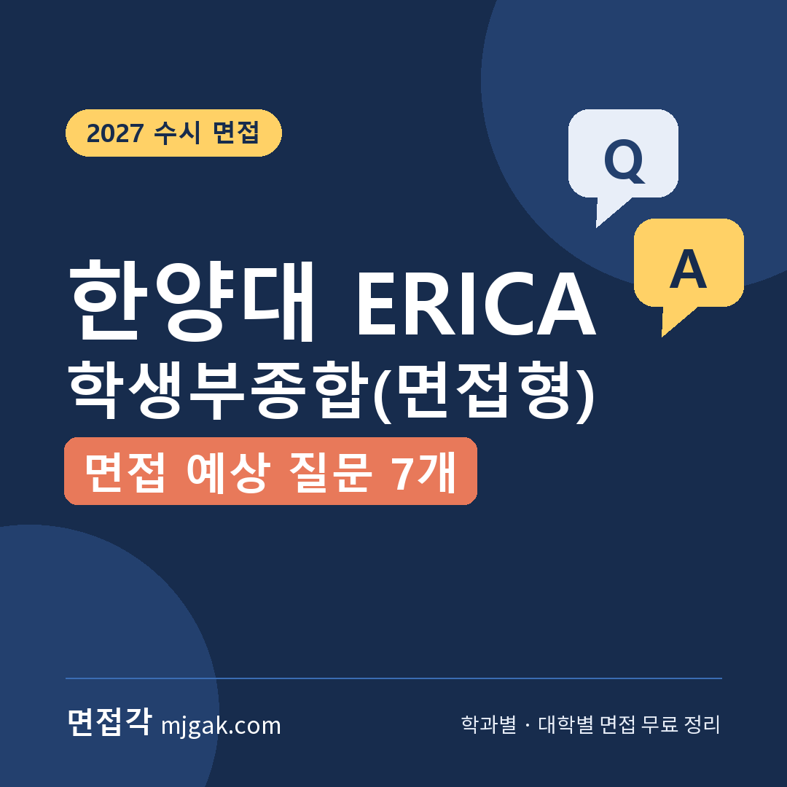
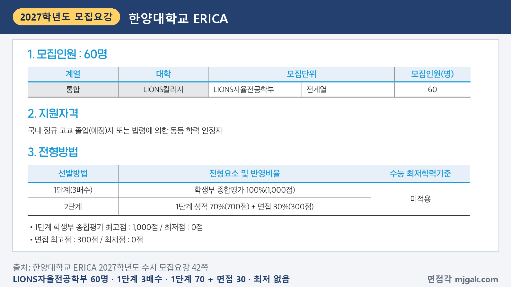
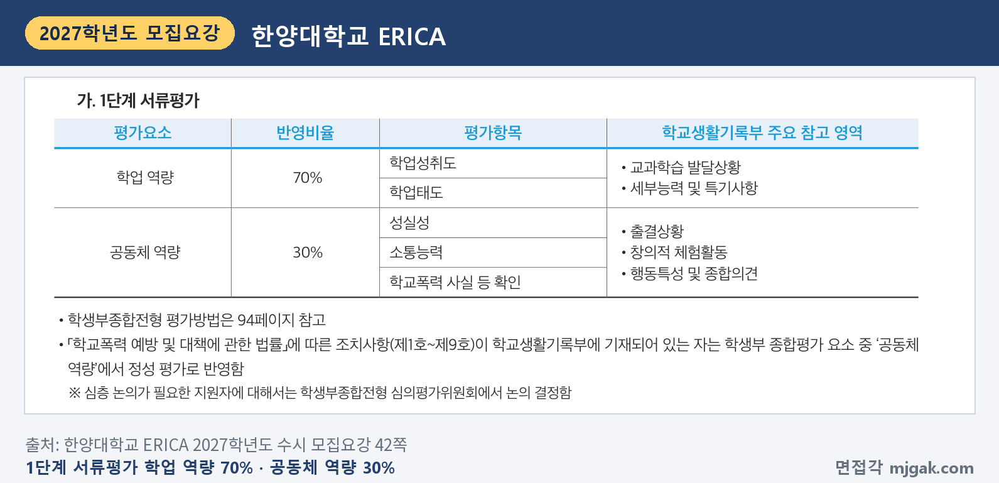
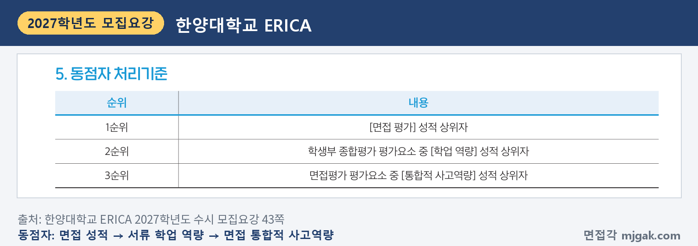
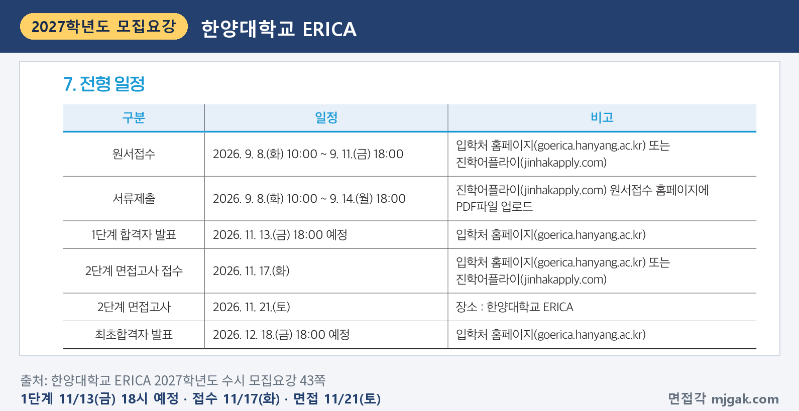
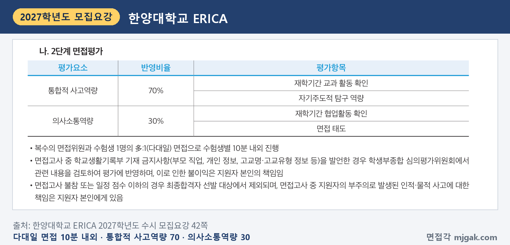
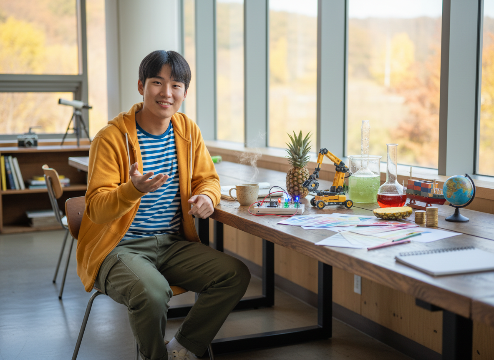
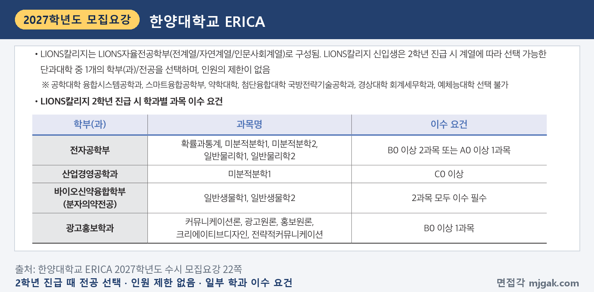
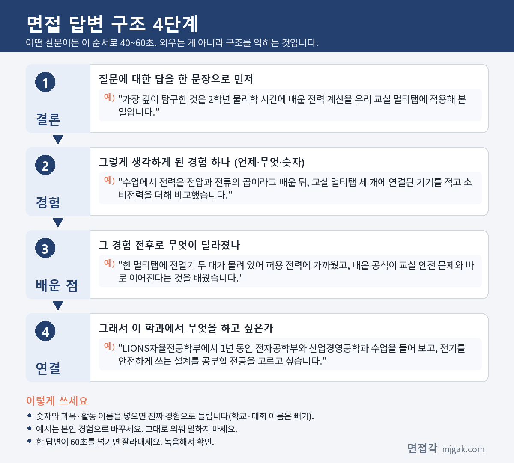

Ctrl+V (서식 유지됨)제목
본문 (이 영역 전체가 복사됩니다)
📷 여기에 이미지 넣기 — 썸네일 — thumb-erica.png (대표 이미지로 지정)
한양대 ERICA 학생부종합(면접형)은 이름이 같은 서울캠퍼스 학생부종합(면접형)과 다른 전형입니다. ERICA 면접형은 LIONS칼리지 LIONS자율전공학부(전계열) 한 곳에서 60명을 뽑고, 면접은 복수의 면접위원이 수험생 1명을 10분 내외로 보는 다대일 면접입니다. 1단계 합격자 발표는 수능보다 엿새 앞선 11월 13일(금) 18:00 예정, 2단계 면접고사 접수가 11월 17일(화), 면접은 수능 이틀 뒤인 11월 21일(토)입니다. 2단계는 1단계 성적 70%와 면접 30%를 합산하고, 수능 최저는 없습니다. 이 글은 한양대학교 ERICA 2027학년도 수시 모집요강으로 전형 방법과 일정, 면접 평가 항목, 예상 질문 7개, 준비 순서를 정리하고, 10월 말에 면접을 보는 국방전략기술공학·조기취업형 계약학과 전형은 한 구역으로 묶었습니다. ERICA 면접형 지원자와 서울캠퍼스·ERICA에 함께 지원한 수험생이 읽으시면 됩니다.
1. ERICA 면접형, 2027학년도에는 어떻게 보나
학생부종합(면접형)은 LIONS칼리지 LIONS자율전공학부(전계열) 60명을 뽑습니다. 지원자격은 국내 정규 고교 졸업(예정)자 또는 법령에 의한 동등 학력 인정자입니다(42쪽). 1단계는 학생부 종합평가 100%(1,000점)로 3배수를 뽑고, 2단계는 1단계 성적 70%(700점)와 면접 30%(300점)를 합산합니다. 수능 최저학력기준은 적용하지 않습니다(42쪽). 이 글에서 계산하면 1단계 합격 규모는 180명입니다.
📷 여기에 이미지 넣기 — 캡처 1 — 한양대학교 ERICA 2027학년도 수시 모집요강 42쪽: erica-2027-myeonjeop-method.png
1단계 서류평가는 학업 역량 70%(학업성취도, 학업태도)와 공동체 역량 30%(성실성, 소통능력, 학교폭력 사실 등 확인)로 봅니다(42쪽). 다른 학생부종합 전형은 2027학년도에 학업 40%·진로 40%·공동체 20%로 바뀌었지만 면접형은 이 변경에서 빠졌습니다(27쪽). 면접형 서류평가 표에는 진로 역량이 없습니다(42쪽). 학업태도의 세부 내용은 "새로운 지식을 획득하기 위해 자기주도적으로 노력하는가?", "교과에서 이루어지고 있는 탐구활동에 적극적으로 참여하고 있는가?"입니다(94쪽).
📷 여기에 이미지 넣기 — 캡처 2 — 한양대학교 ERICA 2027학년도 수시 모집요강 42쪽: erica-2027-myeonjeop-doc.png
동점자는 면접 평가 성적, 학생부 종합평가의 학업 역량, 면접의 통합적 사고역량 순으로 가립니다(43쪽). 전형료는 1단계 50,000원, 2단계 30,000원이고, 1단계 합격자는 정해진 기간 안에 2단계 전형료를 내야 하며 내지 않으면 2단계에 응시할 수 없습니다(97쪽).
📷 여기에 이미지 넣기 — 캡처 3 — 한양대학교 ERICA 2027학년도 수시 모집요강 43쪽: erica-2027-myeonjeop-tie.png
2. 언제 보나: 수능 전 1단계 발표, 수능 이틀 뒤 면접
일정은 날짜순으로 이렇습니다(43쪽).
- 11월 13일(금) 18:00 예정: 1단계 합격자 발표, 입학처 홈페이지(goerica.hanyang.ac.kr)
- 11월 17일(화): 2단계 면접고사 접수, 입학처 홈페이지 또는 진학어플라이
- 11월 19일(목): 수능(19쪽 달력)
- 11월 21일(토): 2단계 면접고사, 장소 한양대학교 ERICA
- 12월 18일(금) 18:00 예정: 최초합격자 발표
1단계 발표에서 면접까지 8일이고, 그 사이에 접수와 수능이 있습니다(이 글에서 계산한 값). 면접 시작 시각과 고사실은 모집요강에 적혀 있지 않습니다. 입학처 홈페이지 공지사항을 확인하지 않아 생긴 불이익은 지원자 책임입니다(모집요강 차례 쪽 안내).
📷 여기에 이미지 넣기 — 캡처 4 — 한양대학교 ERICA 2027학년도 수시 모집요강 43쪽: erica-2027-myeonjeop-schedule.png
3. 면접은 어떻게 보나
면접은 복수의 면접위원과 수험생 1명의 다대일 면접이고, 수험생별 10분 내외로 진행합니다. 평가요소와 반영비율은 다음과 같습니다(42쪽).
- 통합적 사고역량 70%: 재학기간 교과 활동 확인, 자기주도적 탐구 역량
- 의사소통역량 30%: 재학기간 협업활동 확인, 면접 태도
면접 중 부모 직업, 개인 정보, 고교명·고교유형 정보 같은 학교생활기록부 기재 금지사항을 말하면 학생부종합 심의평가위원회가 검토해 평가에 반영하고, 그 불이익은 지원자 책임입니다. 면접에 오지 않거나 일정 점수 이하이면 최종합격자 선발 대상에서 제외합니다(42쪽).
📷 여기에 이미지 넣기 — 캡처 5 — 한양대학교 ERICA 2027학년도 수시 모집요강 42쪽: erica-2027-myeonjeop-interview.png
서울캠퍼스 면접형은 공과대학·한양인터칼리지학부(자연)가 11월 22일(일) 제시문 기반 현장 녹화 면접(비대면)이고, 의예과 12월 5일(토), 사범대학 12월 6일(일)이 학생부 기반 대면 면접입니다(한양대학교 2027학년도 수시모집요강 27쪽). ERICA 면접형은 모든 지원자가 11월 21일(토) 한양대학교 ERICA에서 다대일 면접을 보고, 모집요강에 제시문 안내는 없습니다(42·43쪽).
4. 평가 항목에서 나올 예상 질문 7개와 답변법
한양대 ERICA는 모집요강에 면접 질문 예시를 공개하지 않았습니다. 아래 질문 1~5·7은 평가항목(재학기간 교과 활동 확인, 자기주도적 탐구 역량, 재학기간 협업활동 확인, 면접 태도)으로, 질문 6은 자율전공 모집단위로 정리한 예상 질문입니다. "○○"에는 내 학생부의 과목과 활동이 들어갑니다. 예시 답변은 관심 전공을 바꿔 쓴 가상의 예시이니 본인 경험으로 바꾸세요.
▶ 질문 1. 학생부의 교과 활동 중 가장 깊이 탐구한 내용을 설명해 보세요. (통합적 사고역량: 재학기간 교과 활동 확인)
왜 묻나: 평가항목 '재학기간 교과 활동 확인'과 연결한 질문입니다. 세부능력 및 특기사항에 적힌 탐구를 내 말로 설명할 수 있어야 합니다.
답변 구조: 과목과 주제 한 문장 → 수업에서 배운 것과 해 본 일 → 알게 된 것 → 입학 후 연결.
답변 예시 (전자공학 관심):
"가장 깊이 탐구한 것은 2학년 물리학 시간에 배운 전력 계산을 우리 교실 멀티탭에 적용해 본 일입니다. 수업에서 전력은 전압과 전류의 곱이라고 배운 뒤, 교실 멀티탭 세 개에 연결된 기기를 적고 소비전력을 더해 비교했습니다. 한 멀티탭에 전열기 두 대가 몰려 있어 허용 전력에 가까웠고, 배운 공식이 교실 안전 문제와 바로 이어진다는 것을 배웠습니다. LIONS자율전공학부에서 1년 동안 전자공학부와 산업경영공학과 수업을 들어 보고, 전기를 안전하게 쓰는 설계를 공부할 전공을 고르고 싶습니다."
주의: 교과서 설명에 시간을 쓰지 말고, 내가 해 본 일과 결과에 시간을 쓰세요.
▶ 질문 2. 서로 다른 과목에서 배운 내용을 연결해 본 경험이 있나요? (통합적 사고역량)
왜 묻나: 평가요소 이름이 '통합적 사고역량'이라 이 글에서 예상한 질문입니다. 두 과목의 내용을 하나의 문제에 함께 쓴 장면을 준비하세요.
답변 구조: 연결한 두 과목 한 문장 → 다룬 문제 → 각 과목에서 가져온 것 → 결과와 배운 점.
답변 예시 (경영 관심):
"경제 시간에 배운 수요와 가격의 관계를 확률과 통계의 설문 조사로 확인해 본 경험이 있습니다. 매점 음료 가격을 100원 올리면 얼마나 덜 살지 친구 60명에게 물었는데, 처음에는 '사겠다, 안 사겠다'만 물어 차이가 잘 보이지 않았습니다. 가격을 세 단계로 나눠 다시 묻자 생수보다 탄산음료에서 구매 의사가 크게 줄었습니다. 같은 가격 변화라도 상품마다 반응이 다르다는 것을 숫자로 확인했습니다."
주의: 두 과목 이름만 말하지 말고, 각 과목에서 가져온 것을 하나씩 말하세요.
▶ 질문 3. 수업이 끝난 뒤 스스로 더 찾아보거나 해 본 것이 있나요? (통합적 사고역량: 자기주도적 탐구 역량)
왜 묻나: 평가항목 '자기주도적 탐구 역량'과 연결한 질문입니다. 누가 시키지 않았는데 이어서 한 일을 말해야 합니다.
답변 구조: 수업에서 생긴 궁금증 → 스스로 정한 방법 → 결과 → 다음에 해 보고 싶은 것.
답변 예시 (바이오 관심):
"생명과학 시간에 단백질 분해 효소를 배운 뒤, 생 파인애플을 넣은 젤리는 굳지 않는다는 이야기가 정말인지 궁금했습니다. 집에서 생 파인애플, 통조림 파인애플, 넣지 않은 젤리 세 컵을 같은 시간 동안 굳혀 비교했습니다. 생 파인애플 컵만 굳지 않아, 통조림처럼 가열한 파인애플에서는 효소가 작용하지 않는다고 판단했습니다. 다음에는 온도를 나눠 효소가 언제부터 작용하지 않는지 알아보고 싶습니다."
주의: "책을 더 찾아봤습니다"로 끝내지 말고, 무엇을 어떻게 확인했는지를 말하세요.
📷 여기에 이미지 넣기 — 이미지 1 — 제미나이 생성: 늦가을 햇살이 드는 캠퍼스 라운지에서 LED 회로 키트·작은 로봇 팔·비커·색상 견본 카드·동전과 막대그래프·지구본 옆에서 답하는 남학생(실사) / "제미나이 프롬프트 1" · gem-erica-1.png
(AI로 만든 이미지로, 실제 캠퍼스와 다를 수 있습니다)
▶ 질문 4. 탐구가 계획대로 되지 않았을 때 어떻게 했나요? (통합적 사고역량: 자기주도적 탐구 역량)
왜 묻나: '자기주도적 탐구 역량'과 연결한 질문입니다. 막힌 지점에서 내가 무엇을 바꿨는지가 답의 중심입니다.
답변 구조: 처음 계획 → 막힌 점 → 바꾼 방법 → 결과와 배운 점.
답변 예시 (디자인 관심):
"미술 시간에 교내 분리수거 안내판을 다시 만드는 과제를 했습니다. 처음에는 색을 많이 써서 눈에 띄게 만들었는데, 일주일 뒤 확인하니 잘못 버린 쓰레기가 줄지 않았습니다. 친구들에게 물어보니 색이 많아 어디를 봐야 할지 몰랐다고 해서, 종류별로 한 가지 색과 그림 하나만 남겼습니다. 다시 확인했을 때 잘못 버린 쓰레기가 눈에 띄게 줄어, 디자인은 보는 사람의 행동에서 시작해야 한다는 것을 배웠습니다."
주의: 실패를 숨기지 마세요. 막힌 이유를 내가 어떻게 알아냈는지가 들어가야 합니다.
▶ 질문 5. 모둠 과제에서 맡은 역할과 의견이 달랐을 때 맞춘 과정을 말해 보세요. (의사소통역량: 재학기간 협업활동 확인)
왜 묻나: 평가항목 '재학기간 협업활동 확인'과 연결한 질문입니다. 내 역할과 다른 사람과 의견을 맞춘 과정을 함께 말해야 합니다.
답변 구조: 과제와 내 역할 한 문장 → 갈린 의견 → 내가 한 일 → 결과.
답변 예시 (소프트웨어 관심):
"정보 시간에 네 명이 급식 메뉴 알림 앱 화면을 만들었고, 저는 화면 설계를 맡았습니다. 한 친구는 기능을 많이 넣자고 했고, 다른 친구는 메뉴만 크게 보여 주자고 했습니다. 저는 두 안을 모두 그려 반 친구 열 명에게 써 보게 했고, 대부분 메뉴를 먼저 찾는다는 결과로 메뉴 화면을 첫 장에 두고 나머지 기능은 한 번 더 눌러 보게 정했습니다. 의견이 갈릴 때 쓰는 사람에게 묻는 방법을 배웠습니다."
주의: "저희 모둠은"으로 시작하면 내 역할이 흐려집니다. "저는 ○○을 맡았습니다"로 시작하세요.
▶ 질문 6. LIONS자율전공학부에 지원한 이유와, 1년 동안 전공을 어떻게 정할지 말해 보세요. (지원 동기, 예상 질문)
왜 묻나: 면접 평가항목에 지원 동기는 없지만, 자율전공학부 면접에서 예상할 수 있는 질문입니다. LIONS칼리지 신입생은 2학년 진급 때 계열에 따라 선택 가능한 단과대학 중 하나의 학부(과)·전공을 고르고, 인원 제한은 없습니다(22쪽).
답변 구조: 지원 이유 한 문장 → 관심을 확인한 학생부 장면 → 1년 동안 해 볼 일 두 가지 → 기대하는 모습.
답변 예시 (글로벌 통상 관심):
"무역과 언어 가운데 어느 쪽을 깊이 공부할지 대학에서 직접 들어 보고 정하고 싶어 지원했습니다. 영어 시간에 수출 상품 설명서를 번역하는 활동을 했는데, 같은 문장도 나라마다 단위와 표현을 바꿔야 해서 언어와 거래 규칙이 함께 움직인다는 것을 느꼈습니다. 1학년 때 전공 탐색 과목과 학과 설명회로 글로벌문화통상학부와 경영학부 수업을 비교해 보고, 고른 이유를 설명할 수 있는 전공을 선택하겠습니다."
주의: 전자공학부·산업경영공학과·바이오신약융합학부(분자의약전공)·광고홍보학과는 2학년 진급 때 과목 이수 요건이 있고, 일부 학과는 선택할 수 없습니다(22쪽). 관심 학과의 조건을 확인하고 말하세요.
📷 여기에 이미지 넣기 — 캡처 6 — 한양대학교 ERICA 2027학년도 수시 모집요강 22쪽: erica-2027-lions-major.png
▶ 질문 7. 방금 말한 결과가 맞는지 다른 방법으로 확인한다면 어떻게 하겠어요? (의사소통역량: 면접 태도)
왜 묻나: 개인별 면접에서는 앞 답변을 짚어 다시 묻는 질문도 예상할 수 있습니다. 질문을 끝까지 듣고 묻는 것에 첫 문장으로 답하세요.
답변 구조: 다른 확인 방법 한 문장 → 그 방법을 고른 이유 → 예상되는 한계 → 그래도 해 보고 싶은 이유.
답변 예시 (경영 관심, 질문 2에 이어서):
"설문 대신 실제 판매량으로 확인해 보겠습니다. 설문은 말한 것과 실제로 산 것이 다를 수 있기 때문입니다. 매점에 부탁해 가격을 바꾸기 전과 후의 2주 판매량을 비교하면 더 정확하지만, 날씨나 시험 기간 같은 다른 이유도 섞일 수 있습니다. 그래서 시험 기간이 없는 연이은 두 기간을 고르겠습니다."
주의: 꼬리 질문이 잘 이해되지 않으면 "○○을 여쭤보신 것이 맞을까요?"라고 확인해도 됩니다.
5. 답변은 이 4단계로 만드세요
어떤 질문이든 결론 → 경험 → 배운 점 → 연결 순서로 40~60초 안에 말하세요. 면접이 10분 내외이니 답 하나가 1분을 넘지 않게 연습합니다. 아래 도식은 질문 1을 4단계로 쪼갠 것입니다.
📷 여기에 이미지 넣기 — 도식 — structure-erica.png
6. 국방전략기술공학·조기취업형 계약학과는 10월 말에 면접
학생부종합(국방전략기술공학)은 국방전략기술공학 37명(남 32명, 여 5명)을 1단계 학생부 종합평가 100%로 3배수 뽑고, 2단계에서 1단계 성적 70%, 면접 15%, 체력검정 15%를 합산합니다. 신체검사·인성검사·신원조사는 합격·불합격 판정에 씁니다(64·65쪽). 면접은 면접관 2명과 지원자 1명이 10분 내외로 보고, 평가항목은 학교생활기록부에 기재된 활동 전반에 대한 내용 확인과 군인 기본자세 확인입니다(65쪽). 면접일은 10월 31일(토)입니다(20쪽). 1단계 합격자는 국민체력100 체력인증서와 체력평가 결과지를 11월 23일(월) 10:00 ~ 11월 27일(금) 17:00에 원서접수 홈페이지에 올려야 하고, 2026년 5월 29일 이후 측정 기록만 인정합니다(68쪽). 최초합격자 발표는 12월 18일(금) 18:00 예정입니다(20쪽).
학생부종합(조기취업형 계약학과)은 스마트융합공학부 150명을 1단계 4배수로 뽑고, 2단계는 면접 90%와 1단계 성적 10%입니다(74·75쪽). 면접은 기업 면접 평가위원과 대학 면접 평가위원이 하고, 평가항목은 업무해결능력, 적응력, 인성 등, 시간은 수험생별 12분 내외입니다(76쪽). 면접일은 10월 29일(목) ~ 31일(토)입니다(20쪽). 최초합격자 발표는 11월 13일(금) 18:00 예정입니다(20쪽).
7. 10월 31일(토)부터 면접 당일까지 준비 순서
10월 31일(토) ~ 11월 12일(목): 수능 공부가 먼저이니 주말에 조금씩 합니다. 학생부 세부능력 및 특기사항에서 탐구 두 개, 모둠 활동 한 개를 골라 "왜 시작했나, 내가 한 일, 막힌 점, 다음에 한 일"을 한 줄씩 적고 질문 1·3·5 초안을 만듭니다.
11월 13일(금) 18:00 예정, 1단계 발표: 입학처 홈페이지에서 확인합니다(43쪽).
11월 14일(토) ~ 16일(월): 질문 2·4·6 초안을 만들고, 이름·학교 이름·고교 유형·부모 직업이 들어간 표현을 지웁니다.
11월 17일(화): 2단계 면접고사 접수(43쪽). 2단계 전형료 납부 기간도 입학처 공지에서 확인합니다(97쪽).
11월 18일(수): 10분을 재며 한 번 녹음하고, 60초를 넘는 답을 표시합니다.
11월 19일(목): 수능.
11월 20일(금): 표시한 답을 줄이고 질문 7처럼 앞 답을 짚는 질문에 답해 봅니다. 입학처 공지에서 시간과 장소를 확인하고, 새 답변은 만들지 않습니다.
11월 21일(토), 면접: 장소는 한양대학교 ERICA입니다(43쪽). 일찍 도착합니다.
12월 18일(금) 18:00 예정: 최초합격자 발표. 합격했다면 12월 21일(월) ~ 23일(수) 전자문서 등록을 놓치지 마세요(20쪽).
8. 한양대 ERICA 면접형 자주 묻는 것들
Q. 서울캠퍼스 면접형과 같이 지원할 수 있나요?
A. 캠퍼스·전형 간 중복지원이 가능하지만, 고사 일정이 겹치면 두 곳에 모두 응시할 수는 없습니다(29쪽). ERICA 면접형은 11월 21일(토), 서울캠퍼스 면접형은 11월 22일(일)·12월 5일(토)·12월 6일(일)입니다.
Q. 제시문을 읽고 푸는 문제가 나오나요?
A. 모집요강의 면접형 안내에 제시문이나 문제 풀이 안내는 없습니다. 평가항목은 재학기간 교과 활동 확인, 자기주도적 탐구 역량, 재학기간 협업활동 확인, 면접 태도입니다(42쪽).
Q. 검정고시 출신도 지원할 수 있나요?
A. 됩니다. 면접형은 일반고·자율고, 특목고, 특성화고, 검정고시, 학력인정 평생교육시설, 국외고 출신 모두 지원할 수 있습니다(26쪽).
Q. 면접 복장은 어떻게 하나요?
A. 모집요강의 면접형 안내에 복장 규정은 없습니다(42쪽).
Q. 수능 최저가 있나요?
A. 없습니다(42쪽).
9. 면접 전날 체크리스트
□ 가장 깊이 탐구한 교과 활동을 60초 안에 말할 수 있다
□ 두 과목을 연결한 장면 하나를 말할 수 있다
□ 수업 뒤 스스로 더 해 본 일과 막혔을 때 바꾼 방법을 말할 수 있다
□ 모둠 활동에서 내 역할과 의견을 맞춘 과정을 말할 수 있다
□ 녹음으로 이름·학교 이름·고교 유형·부모 직업이 나오지 않는지 확인했다
□ 2단계 면접고사 접수와 전형료 납부를 마쳤다
□ 입학처 공지에서 면접 시간과 장소를 확인했다
10. 같은 시기에 면접 보는 대학
한양대 ERICA와 같은 주말에 면접을 보는 대학입니다.
▷ 한양대 학생부종합(면접형) 면접 총정리 (11월 22일·12월 5일·6일)
▷ 이화여대 미래인재전형 면접형 면접 총정리 (11월 21일·22일)
11. 함께 보면 좋은 글
ERICA 면접형 면접은 10분 내외 동안 학생부에 적힌 수업과 탐구, 모둠 활동을 내 말로 설명하고, 그 과정에서 내가 스스로 무엇을 했는지 보여 주는 자리입니다.
※ 이 글의 내용은 한양대학교 ERICA 2027학년도 수시 모집요강에서 인용했습니다. 괄호 안 쪽수는 모집요강에 인쇄된 쪽수이고, 서울캠퍼스 내용은 한양대학교 2027학년도 수시모집요강 27쪽입니다. 예상 질문은 모집요강의 평가항목을 바탕으로 정리한 것이며 대학이 공개한 질문이 아닙니다. 면접 시간과 장소는 한양대 ERICA 입학처 홈페이지 공지를 꼭 확인하세요.
한양대 ERICA를 포함한 76개 대학의 2027학년도 면접 정보와 71개 학과별 면접 질문·답변 예시, 대학이 공개한 실제 면접 기출을 무료로 정리한 사이트입니다. 회원가입 없이 바로 볼 수 있고, 질문을 무작위로 뽑아 60초 타이머로 연습하는 모의 면접도 있습니다.
태그 (#은 에디터가 자동으로 붙이므로 그대로 붙여 넣어도 됩니다)
넣을 이미지 목록 (docs/promo/img 폴더)









제미나이 프롬프트 1 — 늦가을 햇살이 드는 캠퍼스 라운지에서 LED 회로 키트·작은 로봇 팔·비커·색상 견본 카드·동전과 막대그래프·지구본 옆에서 답하는 남학생(실사) (4:3) — 제미나이에 그대로 붙여 넣어 이미지를 만드세요